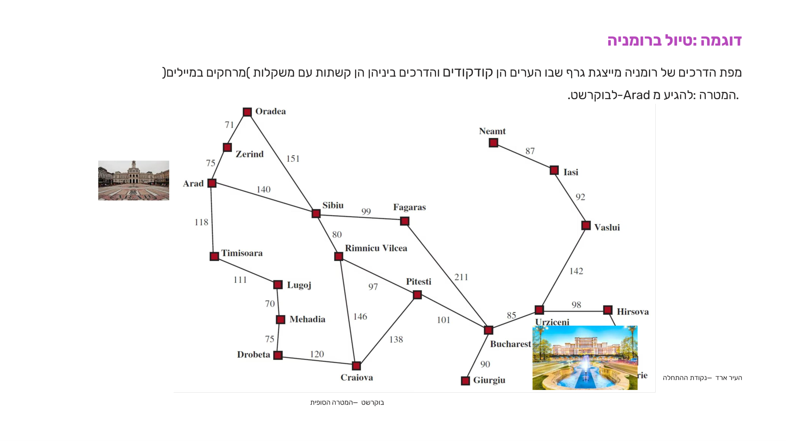
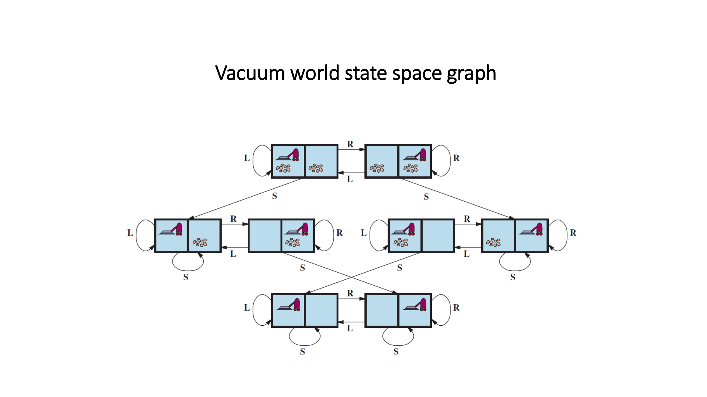
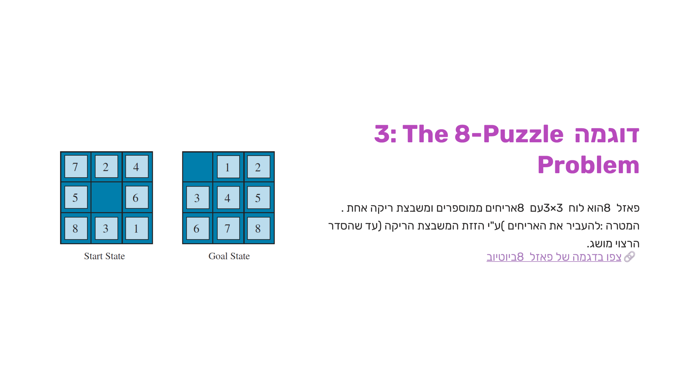
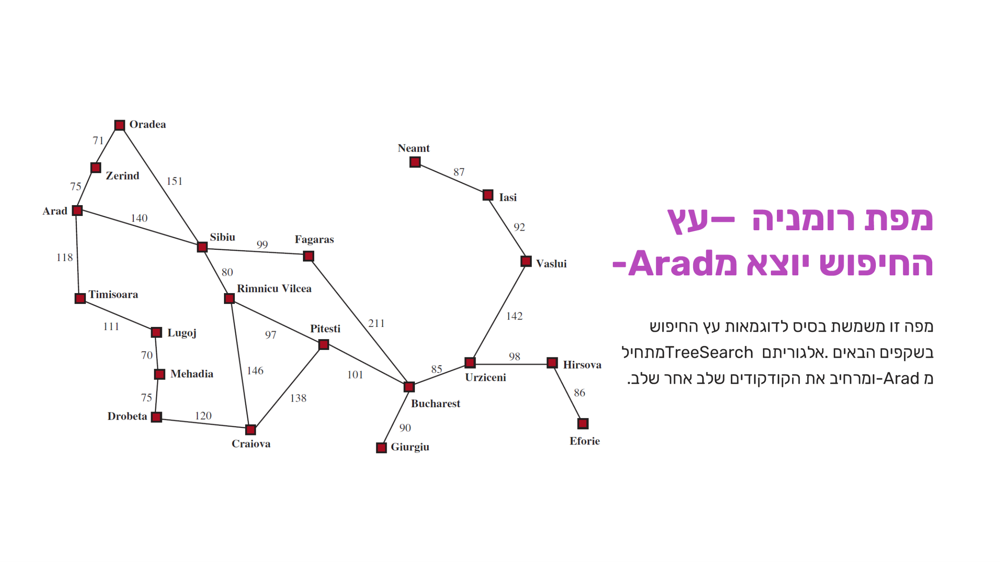
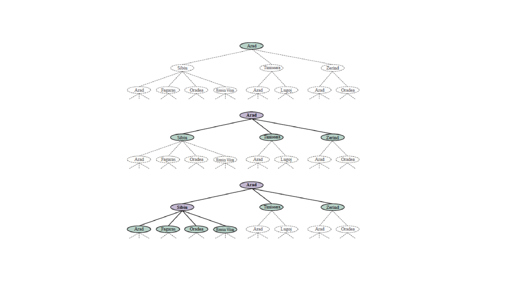
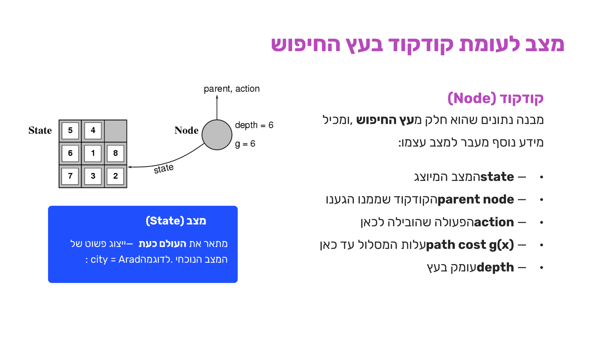

ניסוח בעיות חיפוש
⏱ זמן משוער: 45 דק'
0. האינטואיציה — למה צריך להגדיר בעיה "באופן פורמלי"
עד עכשיו דיברנו על סוכן באופן כללי — מה הוא תופס, מה הוא עושה. עכשיו אנחנו יורדים שלב אחד: איך סוכן שצריך לפתור בעיה (להגיע ליעד, לנקות בית, לסדר לוח) בכלל יודע במה הוא מסתכל? השלב הראשון בפתרון בעיה הוא להגדיר אותה באופן פורמלי — מה המצבים האפשריים בה, מהן הפעולות שאפשר לבצע, ומהי המטרה הרצויה. בלי הגדרה מדויקת הסוכן לא יכול לפעול בצורה מושכלת: הפתרון עצמו הוא בעצם תהליך ההחלטה אילו פעולות ומצבים לבחור כדי להגיע מהמצב ההתחלתי אל המטרה, מתוך בחינה והשוואה של רצפי פעולות אפשריים.
לאורך היחידה נחזור שוב ושוב לאותה תבנית: קודם מסווגים את הסביבה (איך היא מתנהגת), ואז מנסחים את הבעיה באופן פורמלי לפי חמישה מרכיבים קבועים. נעשה את זה על ארבע דוגמאות קלאסיות — טיול ברומניה, עולם שואב האבק, פאזל 8 וחציית הנהר — ונסיים בפסאודו-הקוד הכללי שמריץ חיפוש על מרחב המצבים שהגדרנו.
מקור: 03-search-problems.pdf (עמ' 1–4), deck3b (עמ' 1–4)
1. לפני הניסוח — סיווג סביבת הבעיה
לפני שמנסחים בעיה פורמלית, שווה לעצור רגע ולאפיין את הסביבה שבה היא מתרחשת — כי המאפיינים האלה קובעים איזה סוג של אלגוריתם חיפוש בכלל מתאים. אלה ששת הצירים שכבר פגשנו (ומיישמים כאן שוב, הפעם על דוגמה קונקרטית):
| ציר | השאלה |
|---|---|
| גלויה / לא גלויה | האם הסוכן יכול לצפות במצב המלא של הסביבה? |
| סטטית / דינמית | האם הסביבה משתנה בזמן שהסוכן חושב? |
| אפיזודית / רציפה | האם כל פעולה עצמאית, או שיש תלות בין שלבים? |
| בדידה / מתמשכת | האם מרחב המצבים סופי ובדיד, או רציף? |
| דטרמיניסטית / לא | האם תוצאת הפעולה ידועה מראש בוודאות? |
| סוכן יחיד / מרובים | האם פועלים בסביבה סוכנים נוספים מלבדנו? |
הפעלה על טיול ברומניה (הדוגמה שנפרמל בהמשך העמוד):
| מאפיין | נימוק |
|---|---|
| גלויה | הסוכן יכול לראות את כל מפת הדרכים |
| סטטית | הדרכים לא משתנות בזמן החיפוש |
| אפיזודית (אפשר גם לטעון רציפה) | כל מעבר בין ערים הוא שלב עצמאי עם עלות משלו |
| בדידה | מספר הערים סופי ומוגדר |
| דטרמיניסטית | נסיעה מעיר לעיר מסתיימת תמיד באותה תוצאה |
| סוכן יחיד | רק סוכן אחד פועל בסביבה |
מקור: 03-search-problems.pdf (עמ' 7–8), deck3b (עמ' 7–8)
2. הגדרת בעיה — חמשת המרכיבים
אחרי שסיווגנו את הסביבה, מגיע החלק שחוזר בכל שאלת "ייצג את הבעיה באופן פורמלי" במבחן: חמישה מרכיבים קבועים, בסדר הזה, שהגדרה מדויקת שלהם היא תנאי הכרחי לפעולת אלגוריתם החיפוש:
- מצב כללי של הבעיה (State Space) — קבוצת כל המצבים האפשריים — ייצוג מלא של העולם.
- מצב התחלתי (Initial State) — המצב שבו הסוכן מתחיל את פעולתו.
- פעולות — פונקציית עוקב (Successor Function) — עבור מצב ופעולה חוקית: מה יהיה המצב החדש?
- מבחן המטרה (Goal Test) — האם המצב הנוכחי הוא מצב המטרה?
- עלות מסלול (Path Cost) — סכום עלויות השלבים במסלול הפתרון — מודד את איכות הפתרון.
מקור: 03-search-problems.pdf (עמ' 9), deck3b (עמ' 9)
3. דוגמה 1 — טיול ברומניה: ניסוח פורמלי מלא
רומניה היא הדוגמה הקלאסית (מבוססת Russell & Norvig, AIMA פרק 3) לבעיית ניווט במפה: מרחב מצבים המיוצג כגרף שבו הערים הן קדקודים והדרכים ביניהן הן קשתות עם משקל (מרחק). המטרה: להגיע מ-Arad לבוקרשט.

הניסוח הפורמלי (מילה במילה מהמקור):
- מרחב המצבים: הימצאות בעיר X — city = X.
- מצב התחלתי: city = Arad.
- פעולות — פונקציית עוקב: מעבר מעיר לעיר שכנה:
Successor((city=Arad), GoZerind) = (city=Zerind) Successor((city=city_i), Gocity_j) = (city=city_j) where city_i, city_j adjacent
- מבחן המטרה: city = Bucharest?
- עלות צעד: stepcost = dist(city_i, city_j) — המרחק בין הערים.
מקור: 03-search-problems.pdf (עמ' 5–10), deck3b (עמ' 5–10)
4. פונקציית העוקב — שיטת 4 השלבים
כדי להגדיר פונקציית עוקב כהלכה, המרצה נותנת שיטת עבודה קבועה בת ארבעה שלבים:
| שלב | תוכן |
|---|---|
| א' — הגדרה בעברית | מהן הפעולות החוקיות בבעיה, לכל מצב? |
| ב' — דוגמה ספציפית | נכתוב עוקב לדוגמה עם מצב קונקרטי אחד |
| ג' — ניסוח פורמלי כללי | נכתוב את הכלל הכללי באופן מתמטי |
| ד' — תחום החוקיות | נוסיף תנאי גבול (מגבלות) לכל פעולה |
מקור: 03-search-problems.pdf (עמ' 11, 18), deck3b (עמ' 11, 18)
5. דוגמה 2 — Vacuum World: ניסוח פורמלי ומרחב המצבים המלא
עולם שואב האבק: שתי חדרות A ו-B, כל אחת עשויה להיות נקייה או מלוכלכת, והסוכן נמצא באחת מהן. שאלות הניסוח: states? successor? goal test? step cost?
הניסוח הפורמלי:
- states? (A.dirty?, B.dirty?, location)
- successor?
S(state, Action) = new state S((T,T,A), Right) = (T,T,B) S((T,T,A), Left) = (T,T,A) S((T,T,A), Suction) = (F,T,A)
כלל כללי: Right תמיד מוביל ל-B, Left תמיד ל-A (גם אם הסוכן כבר שם — לולאה עצמית), ו-Suction מנקה רק את החדר הנוכחי. - goal test? A.dirty = False AND B.dirty = False
- step cost? כל פעולה עולה 1.
המרחב המלא של הבעיה הזו קטן מספיק כדי לצייר אותו כולו — 8 מצבים בסך הכל (2 מיקומים × 4 צירופי לכלוך):

שווה להתבונן ברגע: השורה העליונה היא "שני החדרים מלוכלכים", האמצעית "חדר אחד נקי", והתחתונה — שני מצבי המטרה — "שני החדרים נקיים". מכל מצב אפשר להגיע למטרה תוך לכל היותר שלוש פעולות (Suction אחד ולכל היותר מעבר אחד או שניים).
מקור: 03-search-problems.pdf (עמ' 12–14, 34–35)
6. דוגמה 3 — The 8-Puzzle: יישום מלא של 4 השלבים
פאזל 8 הוא לוח 3×3 עם 8 אריחים ממוספרים ומשבצת ריקה אחת (B). המטרה: להעביר את האריחים (ע"י הזזת המשבצת הריקה) עד שהסדר הרצוי מושג.

מצבים: מטריצה P בגודל 3×3:
P[i,j] = x עבור x ∈ {1,2,3,4,5,6,7,8, B}
מבחן המטרה: הגענו לסידור הרצוי, למשל P[3,1]=B, P[3,2]=1, P[3,3]=2, P[2,1]=4, …
עלות מסלול: כל הזזה עולה יחידה אחת — הפתרון האופטימלי הוא זה עם מספר הצעדים המינימלי.
עכשיו נבנה את פונקציית העוקב לפי 4 השלבים:
שלב א' — הגדרה בעברית
הפעולה היחידה היא הזזת המשבצת הריקה — החלפת מקומה עם אחד משכניה הישירים בלוח: שמאלה, ימינה, למעלה או למטה. אפשר לבצע פעולה רק אם יש שכן בכיוון הרצוי (המשבצת הריקה לא בקצה הלוח).
שלב ב' — דוגמה ספציפית
נניח שהמשבצת הריקה נמצאת במיקום [2,2]:
if P[2,2] = B then S(state) = state after swap( P[2,2], P[2,1] ) → left
שלב ג' — ניסוח פורמלי כללי
מרחיבים מהדוגמה הספציפית לכלל שחל על כל מיקום [i,j]:
אם P[i,j] = B אזי S(state) = state after swap( P[i,j], P[i,j-1] ) ← left
עדיין לא מלא — חסרים תנאי הגבול. זה בדיוק שלב ד'.
שלב ד' — תחום החוקיות (תנאי הגבול)
מוסיפים לכל פעולה תנאי שמבטיח שהמשבצת הריקה לא תצא מגבולות הלוח:
If P[i, j] = B then S(state) = state after swap( P[i,j], P[i-1,j] ) If i > 1 (up) state after swap( P[i,j], P[i+1,j] ) If i < 3 (down) state after swap( P[i,j], P[i,j+1] ) If j < 3 (right) state after swap( P[i,j], P[i,j-1] ) If j > 1 (left)
| תנאי | משמעות |
|---|---|
| i > 1 | לא בשורה הראשונה — אפשר לעלות |
| i < 3 | לא בשורה האחרונה — אפשר לרדת |
| j < 3 | לא בעמודה האחרונה — אפשר ימינה |
| j > 1 | לא בעמודה הראשונה — אפשר שמאלה |
מקור: 03-search-problems.pdf (עמ' 15–24), deck3b (עמ' 15–24)
7. דוגמה 4 — Crossing the River: אילוצים בתוך פונקציית העוקב
בגדת נהר נמצאים איכר, זאב, כבשה וכרוב. כולם צריכים להגיע לגדה השנייה באמצעות סירה בעלת שני מקומות. האילוצים:
- אחד המקומות בסירה מאויש תמיד ע"י האיכר.
- אסור להשאיר זאב וכבשה ביחד ללא השגחת האיכר.
- אסור להשאיר כבשה וכרוב ביחד ללא השגחת האיכר.
הניסוח הפורמלי:
- מצבים: וקטור המציין מי נמצא בגדה הראשונה: (Farmer, Sheep, Wolf, Cabbage), כל רכיב 1 (בגדה הראשונה) או 0 (בגדה השנייה).
- מצב התחלתי: (F, S, W, C) — כולם בגדה הראשונה.
- מצב סיום: (0, 0, 0, 0) — כולם בגדה השנייה.
- עלות צעד: כל חצייה (לכל כיוון) עולה יחידה אחת.
- פונקציית עוקב (חלק מהמעברים החוקיים):
S(F, S, W, C) = (0, 0, W, C) // האיכר עובר עם הכבשה S(0, 0, W, C) = (F, S, W, C) OR // האיכר חוזר לבד (F, 0, W, C) // האיכר חוזר עם... S(F, 0, W, C) = (0, 0, 0, C) OR // עם הזאב (0, 0, W, 0) // עם הכרוב S(0, 0, 0, C) = (F, 0, W, C) OR (F, S, 0, C) etc…
גרסה מוכרת נוספת מאותה משפחה היא Missionaries and Cannibals: שלושה מיסיונרים ושלושה קניבלים חוצים נהר בסירה בעלת קיבולת 2 (ולפחות נוסע אחד), כשהאילוץ הוא שבשום גדה מספר הקניבלים לא יעלה על מספר המיסיונרים — אחרת המיסיונרים בסכנה. הניסוח הפורמלי זהה באופיו לחציית הנהר: וקטור מצב, מצב סיום, ופונקציית עוקב שכוללת רק מעברים העומדים באילוץ.
מקור: 03-search-problems.pdf (עמ' 25–30), deck3b (עמ' 25–30)
8. מהבעיה לחיפוש — TreeSearch, קודקוד לעומת מצב
אחרי שיש לנו הגדרה פורמלית, השאלה הבאה היא: איך בכלל מחפשים את הפתרון בתוך מרחב המצבים? כשלסוכן יש כמה אפשרויות ללא עדיפות ברורה, הוא זקוק לאלגוריתם חיפוש מסודר שיחקור את מרחב המצבים באופן שיטתי — מרחיב מצבים קיימים דרך פונקציית העוקב, בודק אם הגיע למטרה, וממשיך עד שמוצא פתרון או קובע שאין פתרון.
הרעיון המרכזי: עוברים על מרחב המצבים ע"י יצירת עוקבים למצבים קיימים, ובכך בונים עץ חיפוש מעל מרחב המצבים, עם שלושה מושגים:
| מושג | הגדרה |
|---|---|
| קדקוד (Node) | מייצג מצב בעולם |
| עלה (Leaf) | מצב שלא התפתחו ממנו מצבים נוספים |
| קשת (Edge) | פעולה שמעבירה ממצב למצב הבא לפי פונקציית העוקב |
הפסאודו-קוד הכללי (מילה במילה מהמקור):
TreeSearch(problem, strategy) // returns a solution or failure
{ Initialize the search tree by the initial state of problem.
Loop do
{ if there are no leaves
return failure
Choose a leaf node according to strategy.
if the node contains a goal state
return the corresponding solution
else
{ expand the node according to successor function
add the resulting nodes to the search tree
}
}
}
המילים "according to strategy" הן הלב של הסיפור: האסטרטגיה היא זו שקובעת את סדר פיתוח הקודקודים — איזה עלה נבחר הבא. שינוי האסטרטגיה בלבד (בלי לגעת בהגדרת הבעיה) הוא ההבדל בין BFS, DFS ושאר האלגוריתמים שנפגוש ביחידה הבאה.
נראה את זה בפעולה על מפת רומניה, עץ החיפוש היוצא מ-Arad:


המימוש המפורט (מילה במילה מהמקור):
TreeSearch(problem, leaves)
{
leaves = Insert(InitialState(problem), leaves)
do
{
if leaves is empty
return failure
node = RemoveFront(leaves)
if GoalTest(problem, node) = true
return solution(node)
leaves = InsertAll(Expand(node, problem), leaves)
}
}
| פונקציה | תפקיד |
|---|---|
| RemoveFront | בוחר את העלה הבא לפיתוח — לפי האסטרטגיה |
| GoalTest | בודק אם הקודקוד הנוכחי הוא מצב המטרה |
| Expand | מרחיב את הקודקוד ומייצר את כל העוקבים |
| InsertAll | מוסיף את הקודקודים החדשים לרשימת העלים |
הפעולה Expand עצמה משתמשת בפונקציית העוקב של הבעיה, וממלאת את כל שדות הקודקוד החדש:
Expand(node, problem)
{
successors = empty set
for each action in SuccessorFn(node)
{
new = a new node
State[new] = result of SuccessorFn(node)
ParentNode(new) = node
Actions[new] = action
PathCost[new] = PathCost[node] + StepCost(node, action, new)
Depth[new] = Depth[node] + 1
Add new to successors
}
return successors
}
דוגמה קונקרטית — Expand(Arad) עם הפעולה GoSibiu:
State[new] = Sibiu ParentNode(new) = node(Arad) Actions[new] = GoSibiu PathCost[new] = 0 + 140 // עלות הצעד Arad–Sibiu מהמפה Depth[new] = 0 + 1
מצב (State) לעומת קודקוד (Node)
מצב — מתאר את העולם כעת, ייצוג פשוט (לדוגמה city = Arad). קודקוד — מבנה נתונים שהוא חלק מעץ החיפוש, ומכיל מידע נוסף מעבר למצב עצמו: state, parent node, action, path cost g(x), depth.

הערכת אלגוריתם חיפוש — ארבעה קריטריונים, ו-b, d, m
אסטרטגיית חיפוש נשפטת לפי ארבעה קריטריונים: שלמות ואופטימליות (האם תמיד מוחזר פתרון כשקיים? האם הוא הזול ביותר?), וסיבוכיות זמן ומקום. את הסיבוכיות מודדים ביחס לשלושה פרמטרים:
| פרמטר | שם | הגדרה |
|---|---|---|
| b | Branching Factor | מספר הענפים המקסימלי בעץ החיפוש — כמה עוקבים יש לכל קודקוד לכל היותר |
| d | Depth of Solution | עומק הפתרון הזול ביותר |
| m | Max Depth | העומק המקסימלי של מרחב המצבים — עשוי להיות ∞ בגרפים עם מעגלים |
לדוגמה: BFS הוא שלם ואופטימלי (בעלויות אחידות), אך סיבוכיות הזמן והמקום שלו — O(b^d) — יכולה להיות ענקית עבור b ו-d גדולים. זו בדיוק הסיבה שיחידה 3 (החיפושים הלא-מיודעים) פותחת בהשוואה בין האלגוריתמים לפי המדדים האלה.
מקור: 03-search-problems.pdf (עמ' 31–45), deck3b (עמ' 31–49)
9. מלכודות למבחן
10. תרגיל הבית — תרגיל 1 (המשך): תיאור פורמלי של בעיה
שאלות 1–2 של תרגיל 1 (סיווג סביבות) הופיעו כבר בפרק הקודם. שאלה 3 של אותו תרגיל, ושאלת אימון נלווית, עוסקות בדיוק במה שלמדנו כרגע — ניסוח פורמלי של בעיה — ולכן שייכות כאן.
שאלה 3 — תיאור פורמלי של בעיית הסודוקו [40 נק']
תארו את בעיית פתרון סודוקו באופן פורמלי (פתרון בעברית לא יקבל ניקוד): כיצד מגדירים מצב כללי? [8 נק'] מהי פונקציית העוקב, באופן כללי ופורמלי? [26 נק'] מהו מבחן המטרה? [4 נק'] מהי עלות צעד? [2 נק']
מצב כללי לבעיה [8 נק']: מטריצה X בגודל 9×9 כשבכל משבצת יכולה להיות ספרה עשרונית או ריק = B. בכתיבה פורמלית — מצב בעיה הוא מטריצה X_ij כש-i מציין את השורה ו-j מציין את הטור:
Xij ∈ {1,2,3,4,5,6,7,8,9,B}, 1 ≤ i ≤ 9, 1 ≤ j ≤ 9
המצב ההתחלתי: המטריצה שבה חלק מהתאים מכילים מספר וחלק מכילים B. אין לכתוב אותו פורמלית — הוא ארוך מדי וגם לא ידוע מראש; יכולים להיות רבים.
פונקציית העוקב [26 נק' — רוב הניקוד]: כתיבת ספרה במשבצת ריקה (המכילה B), בכפוף להגבלות הבעיה: הערך שנציב בתא X_ij אינו נמצא בטור j שלו, אינו נמצא בשורה i שלו, ואינו נמצא בריבוע הפנימי 3×3 אליו שייך התא (מוצאים את תחילת הריבוע על ידי נרמול האינדקסים):
F(Xij) = { a | Xij = B and a ∈ {1,2,3,4,5,6,7,8,9}
And a ≠ Xkj for every k, 1 ≤ k ≤ 9 and i ≠ k
And a ≠ Xik for every k, 1 ≤ k ≤ 9 and j ≠ k
And a ≠ Xfk for startRow ≤ f ≤ startRow+2, startCol ≤ k ≤ startCol+2
where (i,j) ≠ (f,k),
and where startColumn = [(j-1) div 3]*3 + 1
startRow = [(i-1) div 3]*3 + 1 }
מצב סיום [4 נק']: הלוח כולו מלא — אין תאים עם B. אין צורך לבדוק שוב שכל תא תקין, כי פונקציית העוקב הציעה רק הצבות חוקיות:
for every i,j, 1 ≤ i,j ≤ 9 : Xij ≠ B
עלות צעד [2 נק']: 1 — אין משמעות להשמת ערך מסוים או אחר.
מצב כללי: כמות הנוזל בכל כד [A,B,C]. מצב התחלתי: [2, 0, 5]. מצב מסיים: [A, B, 1]. עלות מסלול: 1 לכל צעד.
פונקציית עוקב (ריקון לכיור + העברות בין כדים, בלי לשפוך):
f(A,B,C):
1. { (0, B, C) | A > 0 }
2. { (A, 0, C) | B > 0 }
3. { (A, B, 0) | C > 0 }
4. { (2, B, C - (2-A)) | C + A ≥ 2 & A < 2 }
5. { (A + C, B, 0) | A + C ≤ 2 & C > 0 }
6. { (2, B - (2-A), C) | B + A ≥ 2 & A < 2 }
7. { (A + B, 0, C) | A + B ≤ 2 & B > 0 }
8. { (A, 3, C - (3-B)) | C + B ≥ 3 & B < 3 }
9. { (A, B + C, 0) | B + C ≤ 3 & C > 0 }
10. { (A - (3-B), 3, C) | A + B ≥ 3 }
11. { (0, B + A, C) | B + A ≤ 3 & A > 0 }
12. { (A, B - (5-C), 5) | B + C ≥ 5 & C < 5 }
13. { (A, 0, C + B) | C + B ≤ 5 & B > 0 }
14. { (A - (5-C), B, 5) | A + C ≥ 5 & C < 5 }
15. { (0, B, C + A) | C + A ≤ 5 & A > 0 }
הערה חשובה מהמקור: מילוי כד X מתוך Y (למשל כלל 4) וריקון Y לתוך X (כלל 5) הם שני כללים שונים — מי שמנסה לאחד אותם לכלל אחד כולל מעברים בלתי אפשריים (כמו העברת ליטר בודד גם כשהכד המקבל ריק לגמרי). סה"כ 15 כלל: 3 כללי ריקון לכיור + 12 כללי העברה בין הכדים.
מקור: ex01.pdf, sol01.docx
11. בדיקה עצמית
מהם חמשת המרכיבים שמרכיבים הגדרה פורמלית של בעיית חיפוש?
מהי ההדגשה שהמרצה חוזרת עליה פעמיים (עמ' 11 ו-18) לגבי פונקציית העוקב?
מהו הסדר הנכון של 4 השלבים להגדרת פונקציית עוקב, לפי השיטה שהוצגה בהרצאה?
בבעיית ה-8-Puzzle, איזה תנאי גבול מבטיח שאפשר להזיז את המשבצת הריקה שמאלה (swap עם P[i,j-1])?
בעולם שואב האבק (Vacuum World), מה נכון לגבי הפעולה Right בכל מצב אפשרי?
בבעיית Crossing the River, כיצד מקודד האילוץ "אסור להשאיר זאב וכבשה יחד ללא השגחת האיכר"?
באלגוריתם TreeSearch הכללי, מי קובע איזה עלה מפותח הבא (RemoveFront)?
מה ההבדל המרכזי בין "מצב" (state) ל"קודקוד" (node) בעץ החיפוש?
סיימתם את הפרק? סמנו אותו כהושלם: